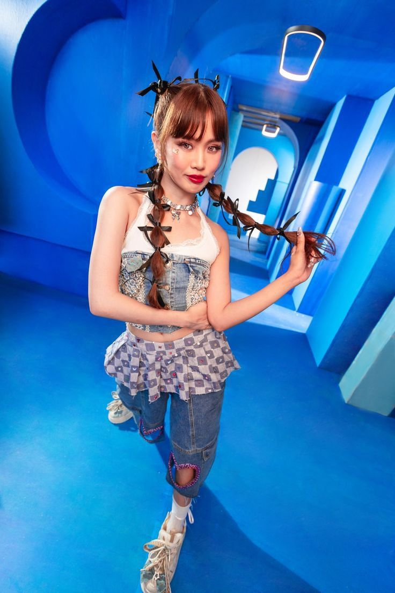

Full Name: Mary Loi Yves Ricalde
Stage Name: Maloi, Lucky, Lamoi
Birthday: May 13, 2002 (Age 22)
Position in BINI: Main Vocalist, Visual
Hometown: Maloi is originally from Marikina City, Philippines
- Hobbies
- Maloi enjoys singing and often spends time refining her vocal skills. She also loves writing songs, which allows her to express her emotions and connect with others through music. Reading books is another passion, as it provides her with inspiration and a way to unwind after a busy day
- Inspirations
- Maloi finds inspiration in her family, who constantly support her artistic journey. Her faith is a guiding force that keeps her grounded and motivated. She admires Filipino artists like Moira Dela Torre for their storytelling through music and emotional depth, which inspire Maloi's own approach to her craft.